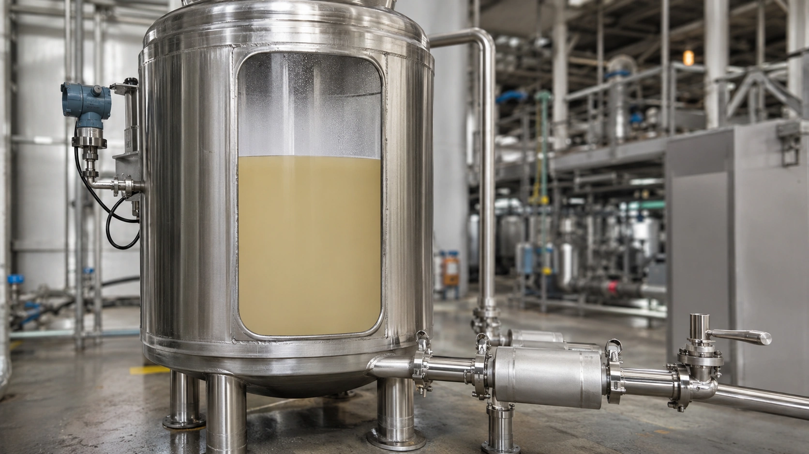

Massa em tanque por nível e densidade: como interpretar a medição
Conteúdo técnico: ALOGY Engenharia · Atualizado em: 11/09/2026

O nível informa altura, não massa. Para estimar inventário é preciso converter a indicação em volume e depois aplicar uma densidade representativa. Cada etapa possui sua própria fonte de erro e precisa ser rastreável à condição usada.
1. Level measurement: confirme o que o instrumento mede
Verifique TAG, tecnologia, referência de zero, LRV/URV, unidade e posição física. Em radar/ultrassônico, espaço vazio pode ser a grandeza primária; em DP, densidade e elevação entram na relação; em boia/deslocador, a interface e a densidade também podem influenciar.
Espuma, interface, vapor, incrustação ou mudança de produto podem alterar a leitura sem qualquer mudança real de volume.
2. Nível não vira volume pela mesma regra em todos os tanques
Em tanque vertical de seção constante, a relação pode ser aproximadamente linear. Em tanque horizontal, fundo abaulado, teto especial ou geometria irregular, use a tabela nível-volume/arqueação correspondente ao tanque e à revisão correta.
| Etapa | Dado necessário | Erro comum |
|---|---|---|
| Nível | Valor, unidade, zero/span e instante. | Tratar altura indicada como volume. |
| Volume | Geometria ou tank strapping table válida. | Usar relação linear em geometria não linear. |
| Densidade | Valor, unidade, temperatura e composição. | Usar densidade nominal fora da condição real. |
| Massa | Volume × densidade na mesma base. | Misturar kg/L, kg/m³, L e m³. |
3. Densidade pode variar
Temperatura, composição, concentração, pressão e gás incorporado podem alterar a densidade. Para acompanhamento operacional, uma densidade nominal pode ser suficiente como estimativa; para balanço rigoroso, transferência ou uso fiscal, o método aplicável precisa definir compensação e rastreabilidade.
Exemplo simples
Se um tanque vertical de área constante está a 60% do nível útil, o volume pode ser aproximadamente 60% do volume útil — desde que a geometria realmente seja linear nessa faixa. Depois, multiplique o volume pela densidade correspondente à condição definida.
Se o tanque for horizontal ou tiver seção variável, 60% de altura não significa necessariamente 60% de volume.
Use a discrepância como diagnóstico
Quando o inventário calculado não fecha com consumo, transferência ou medidor de vazão integrado, não ajuste automaticamente o transmissor. Separe hipóteses:
- erro/deriva do level transmitter;
- tabela de arqueação ou referência de zero incorreta;
- densidade diferente da assumida;
- volume morto/internos não considerados;
- espuma/interface alterando a indicação;
- erro no balanço de entrada/saída.
Registro mínimo
- tanque, produto, data/hora e condição operacional;
- nível, unidade, tecnologia e origem do sinal;
- fonte/revisão da tabela nível-volume;
- densidade, temperatura, composição e origem do valor;
- resultado declarado como estimativa e finalidade de uso.
Ferramentas e referências
Para usos metrológicos mais rigorosos, consulte o VIM/JCGM sobre resultado de medição e, quando aplicável à finalidade, referências sobre calibração/tabelas de tanques.
Aviso técnico
Esta estimativa não substitui tabela de arqueação válida, medição fiscal/comercial, análise de incerteza ou requisito legal. Confirme o método exigido para a finalidade real do inventário.